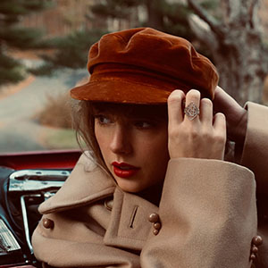
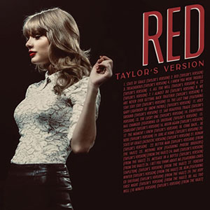

Red (Taylor's Version) is Taylor Swift's re-recorded version of her country-pop album released in 2012, Red. It is her second re-recorded album released as part of her plan to reclaim the masters of her back catalogue that were sold in 2019. The album was released on November 12, 2021 and consists of 30 tracks, including 9 tracks "From the Vault".
Click here for Red (Taylor's Version) tracklist!
Taylor Swift released All Too Well: The Short Film on November 12, 2021 as a music video for "All Too Well (10 Minute Version)". It is directed by Taylor Swift and stars Sadie Sink, Dylan O'Brien, and Taylor Swift.
Click here to watch:
Taylor Swift released the music video for I Bet You Think About Me (ft. Chris Stapleton) on November 15, 2021. It is directed by Blake Lively and stars Miles Teller and Taylor Swift.
Click here to watch:
| Organization | Year | Category | Nominee |
|---|---|---|---|
| Grammy Awards | 2023 | Best Music Video | All Too Well: The Short Film |
| Video Music Awards | 2022 | Best Direction | All Too Well: The Short Film |
| Video Music Awards | 2022 | Video of the Year | All Too Well: The Short Film |
| Video Music Awards | 2022 | Best Longform Video | All Too Well: The Short Film |
| American Music Awards | 2022 | Favorite Music Video | All Too Well: The Short Film |
| American Music Awards | 2022 | Favorite Pop/Rock Album | Red (Taylor's Version) |
| American Music Awards | 2022 | Favorite Country Album | Red (Taylor's Version) |
| Billboard Music Awards | 2022 | Top Country Album | Red (Taylor's Version) |
| Gold Derby Music Awards | 2023 | Best Country/Americana Album | Red (Taylor's Version) |
| Gold Derby Music Awards | 2023 | Best Music Video | All Too Well: The Short Film |